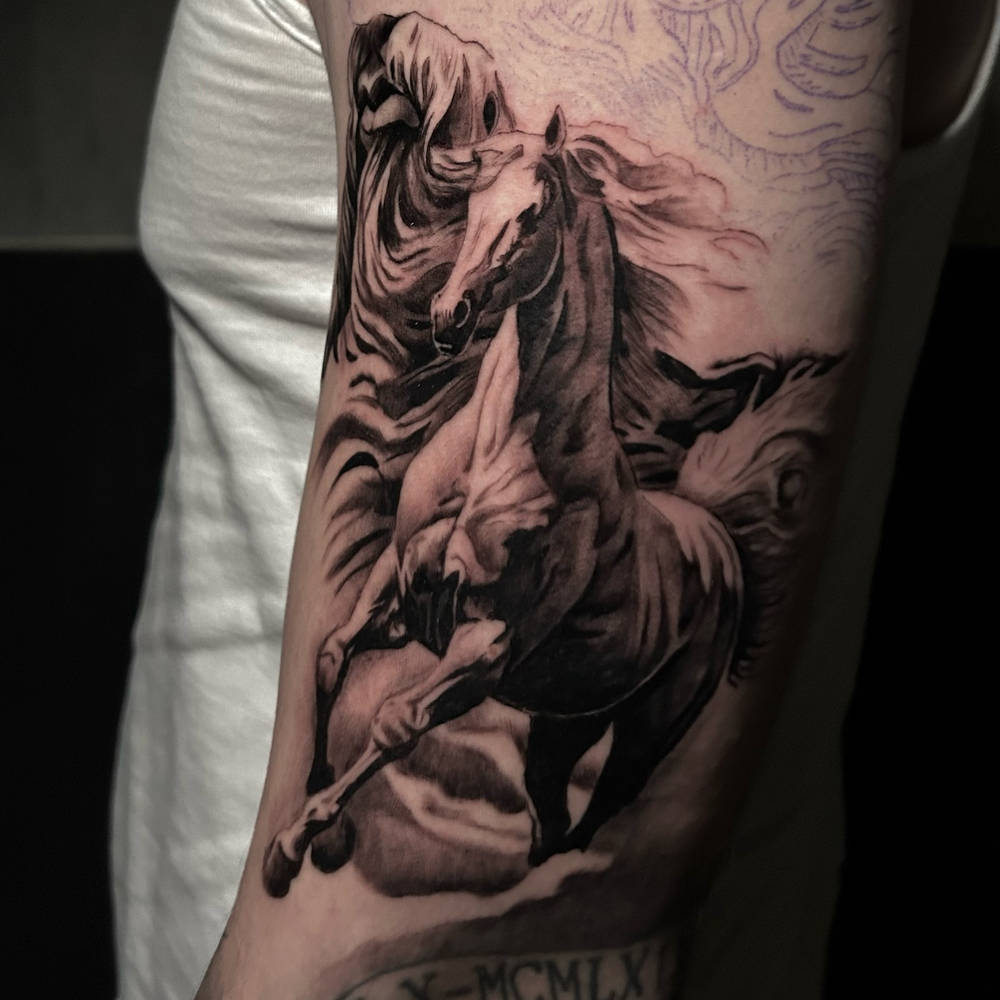
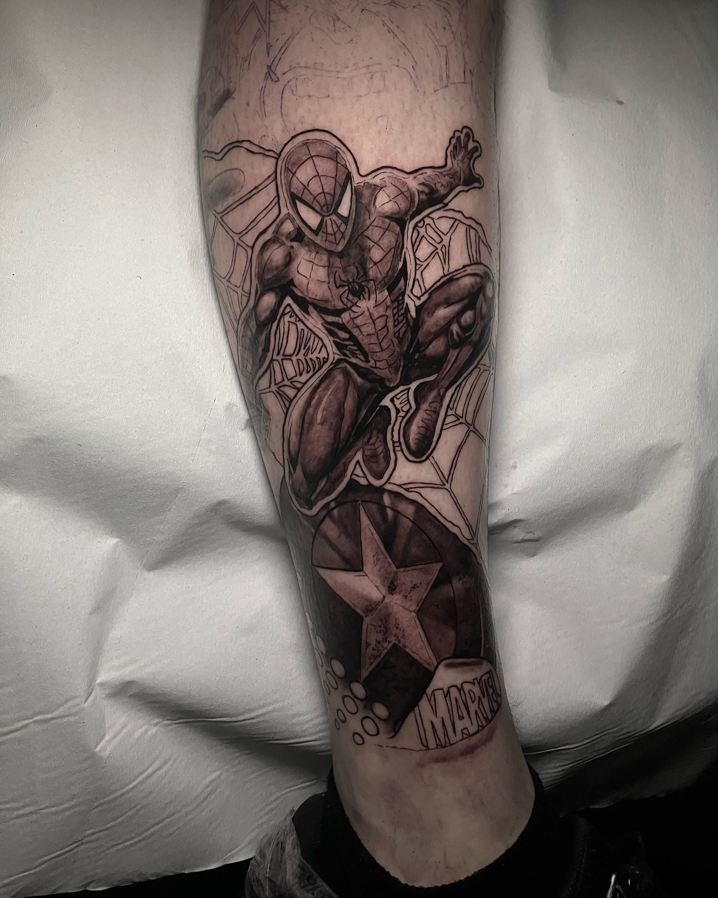
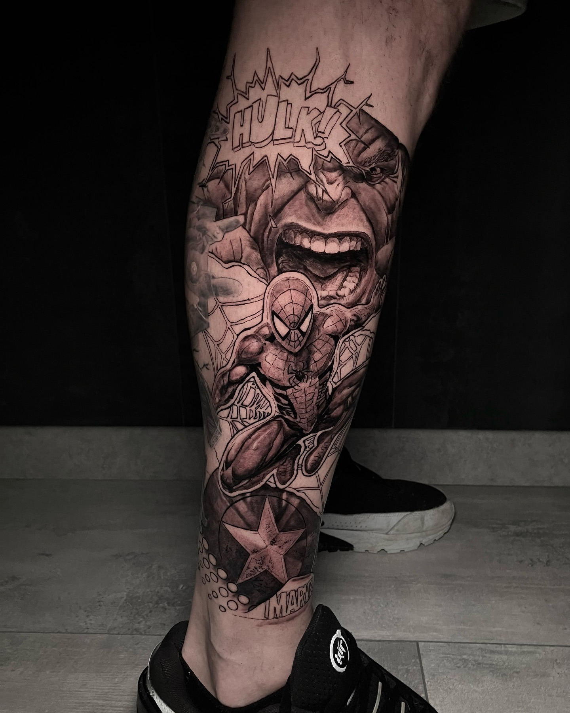
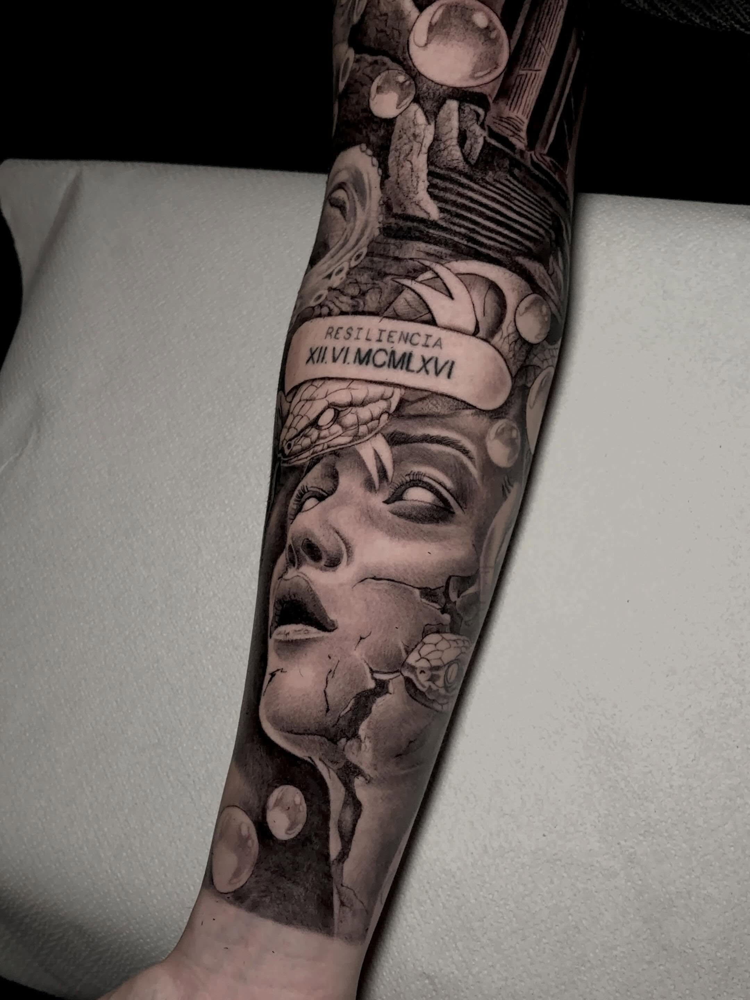
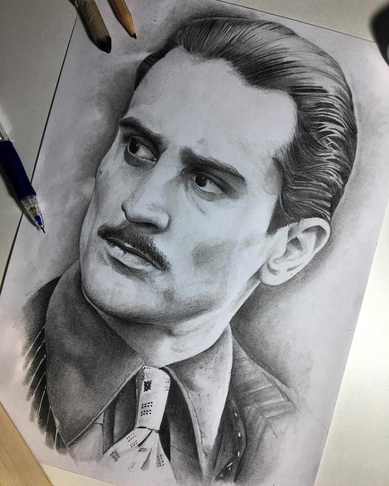
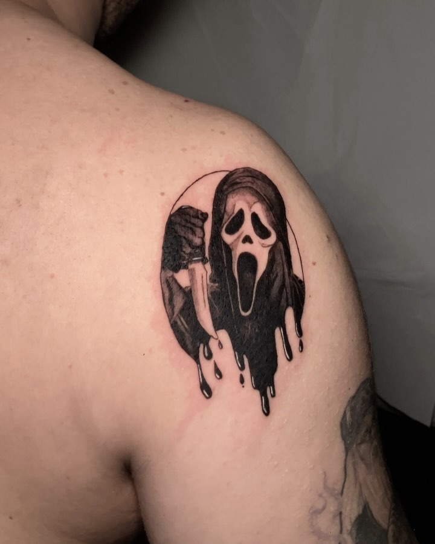
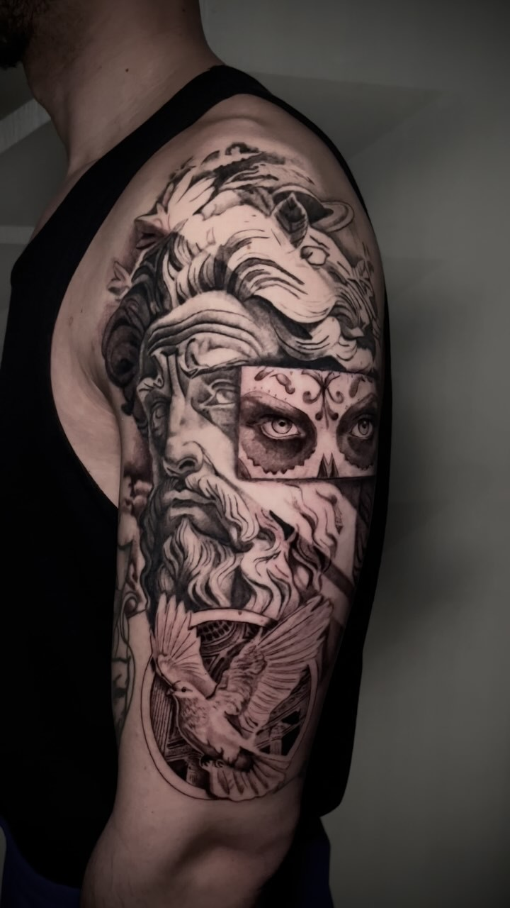

Tatuador · Black & Grey
Reque
Realismo en negro y gris con composiciones de gran formato, contraste profundo y una narrativa visual que recorre el cómic, el cine y la iconografía clásica.

EstiloRealismo
PaletaBlack & Grey
MotivosCómic · Cine · Narrativa
Selección confirmada
Escenas que recorren la piel.
Piezas figurativas construidas con volumen, sombras densas y escenas reconocibles, desde grandes composiciones hasta motivos más contenidos.







@reque.tattoo